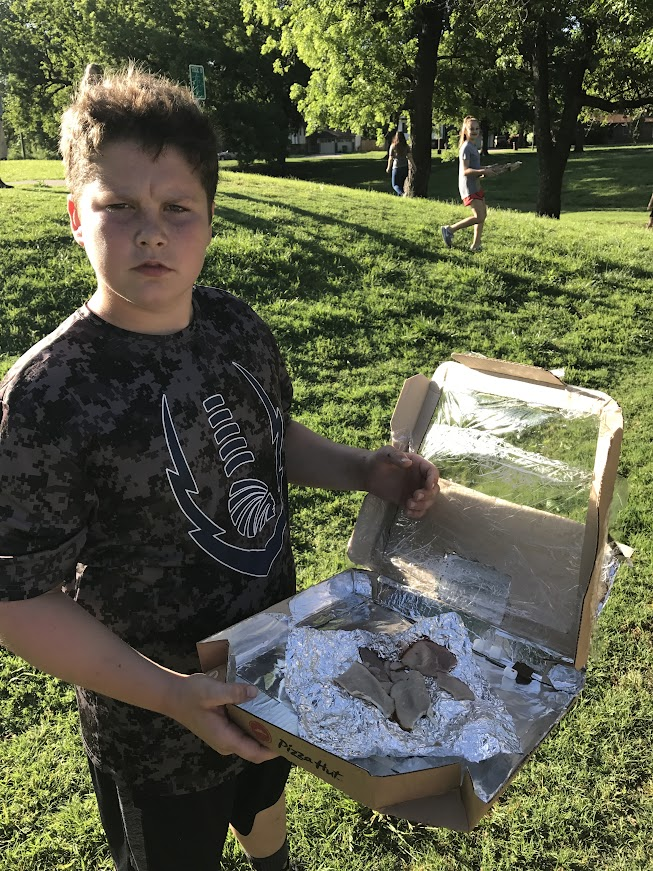
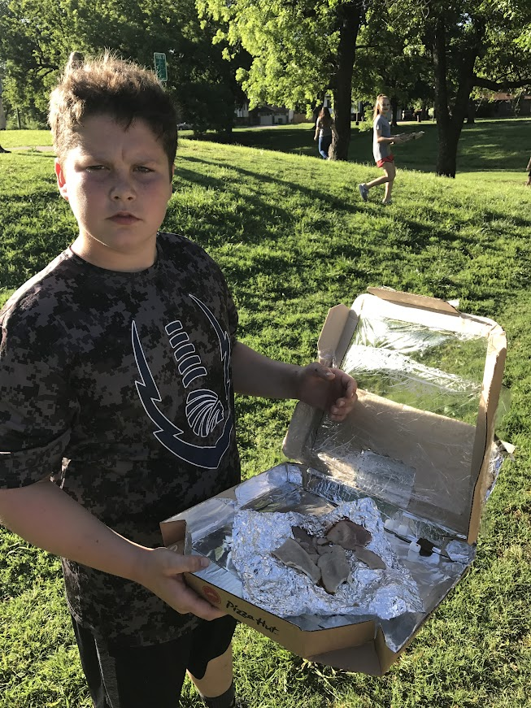
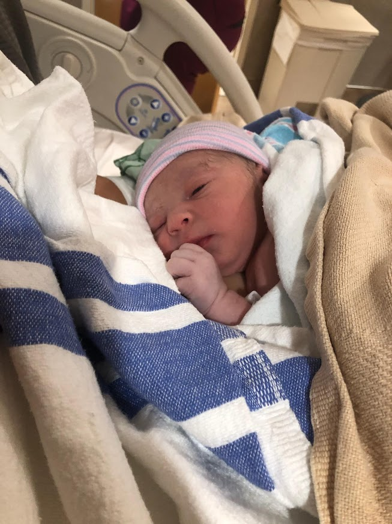
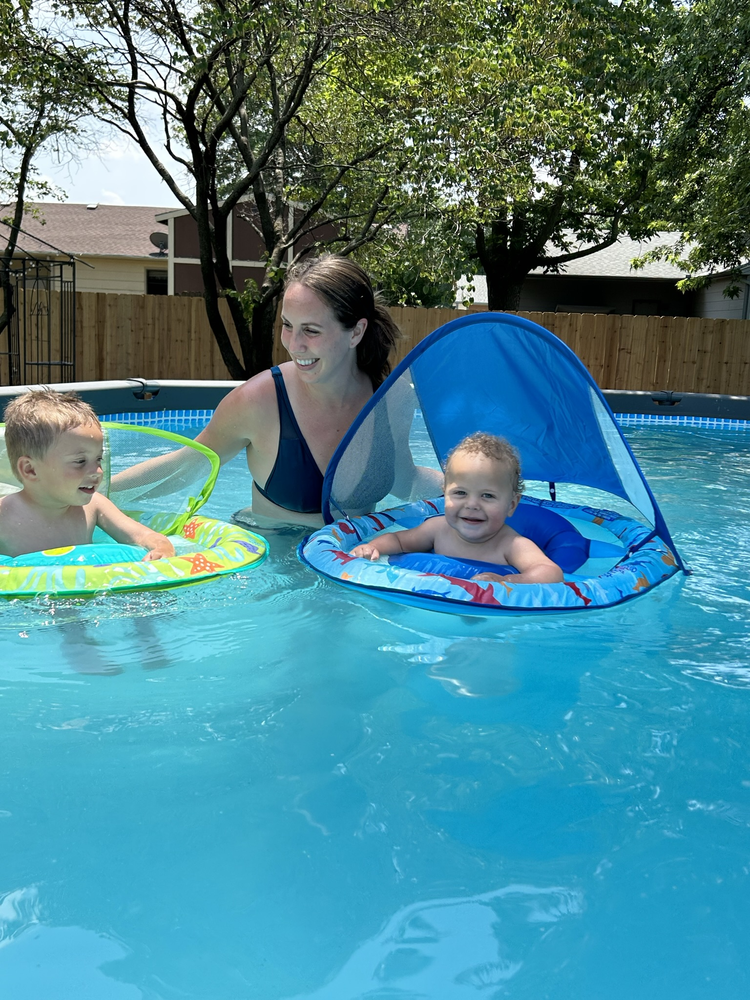
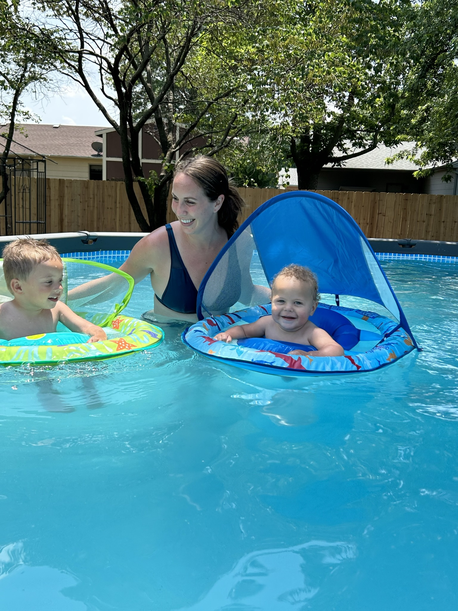

I was born to teach.
I loved school. My parents never had to force me to get out of bed to go, so it was a very natural and
obvious transition when I became a teacher.
 My first position as a new graduate was as a 5th grade teacher. I took over in January for the previous
teacher when she made the sudden decision to go teach middle school. That was a hard transition, but it
taught me how to humble myself. I quickly realized that I couldn’t be amazing and awesome at everything
right out of the gate, so I needed to decide one or two things to focus on to be great at, and then
choose something new to be great at the following year. By making that decision and having some of the
most supportive and helpful coworkers, I survived that semester.
My first position as a new graduate was as a 5th grade teacher. I took over in January for the previous
teacher when she made the sudden decision to go teach middle school. That was a hard transition, but it
taught me how to humble myself. I quickly realized that I couldn’t be amazing and awesome at everything
right out of the gate, so I needed to decide one or two things to focus on to be great at, and then
choose something new to be great at the following year. By making that decision and having some of the
most supportive and helpful coworkers, I survived that semester.
 After 5 years of teaching 5th grade, I was ready to move up to teach older kids. Doing so was one of the
hardest decisions I ever made – I was leaving behind some of the best people I had ever met. Thankfully,
our friendships were so strong, we still get together regularly almost 8 years later.
After 5 years of teaching 5th grade, I was ready to move up to teach older kids. Doing so was one of the
hardest decisions I ever made – I was leaving behind some of the best people I had ever met. Thankfully,
our friendships were so strong, we still get together regularly almost 8 years later.
Middle school was a whole new beast.
The kids were hormonal and sarcastic. We got along great. I taught science for the next 7 years, and I
woke up excited to go to work and see my kids every single day. We did all kinds of labs and projects:


 



My classroom was a constant mess due to the revolving door of experiments and projects, and I, and my
students, loved it.


 During my time teaching middle school, I got engaged, married, announced my first pregnancy and, in
general, celebrated every milestone that either I or my students experienced.
During my time teaching middle school, I got engaged, married, announced my first pregnancy and, in
general, celebrated every milestone that either I or my students experienced.

And then Covid
happened.
Everything changed overnight as we quickly pivoted to online learning. No more labs or projects. Students
weren’t at school to chat with and get to know. Forming meaningful relationships was a thing of the past.
When students did finally come back to school, they were different than before. The amount of students
that were blatantly disrespectful – cussing us out, throwing chairs, walking out of class, being on their
phones (texting, posting on Instagram and taking phone calls) and sexually harassing (yes, I’m serious) –
was the new normal. I was pregnant with my second child during this time, and I was in constant fear for
my and my baby’s safety. I was breaking up fights multiple times a week and the stress was indescribable.
I didn’t have the desire to announce this pregnancy with my students as I had in the past, and every day
was a drudgery having to go to the place I used to embrace.
That was my last year of teaching.

 After giving birth to my youngest son, I decided to stay home with my two boys for a while and figure out
what would make me happy again professionally. I love working. The successful and productive feeling I
get from doing a great job is such an adrenaline rush for me. So, after about 5 months of being home, I
decided to start looking to see what I could do other than teaching. The passion I had for that
profession is dead. Though I do still feel like I was born to teach, I can’t imagine going back into
education with the way things currently are in the school system.
After giving birth to my youngest son, I decided to stay home with my two boys for a while and figure out
what would make me happy again professionally. I love working. The successful and productive feeling I
get from doing a great job is such an adrenaline rush for me. So, after about 5 months of being home, I
decided to start looking to see what I could do other than teaching. The passion I had for that
profession is dead. Though I do still feel like I was born to teach, I can’t imagine going back into
education with the way things currently are in the school system.
So here I am. 37 with a what-feels-like useless Masters degree. My whole professional life wrapped up in
teaching. And no idea if this gamble into the tech world is going to pay off. I knew changing careers
would be difficult, but it’s so much more difficult than I had ever imagined. It’s been almost 15 years
since I graduated college. The math skills that used to come so naturally and easily for me are a
struggle to tap into again. Trying to keep up and learn all of the new concepts while not abandoning my
family has made me have several emotional breakdowns. I have contemplated quitting a few times, each time
to be talked down by my husband, sister and mom. I am learning to humble myself all over again.


 
I am doing this for me. For my sons. For my husband. For my sister. I don’t know that I will be the best,
and it may take me longer to complete the assignments than others in the class, but my goal is to keep
pushing.

I am doing this for me. For my sons. For my husband. For my sister. I don’t know that I will be the best,
and it may take me longer to complete the assignments than others in the class, but my goal is to keep
pushing.